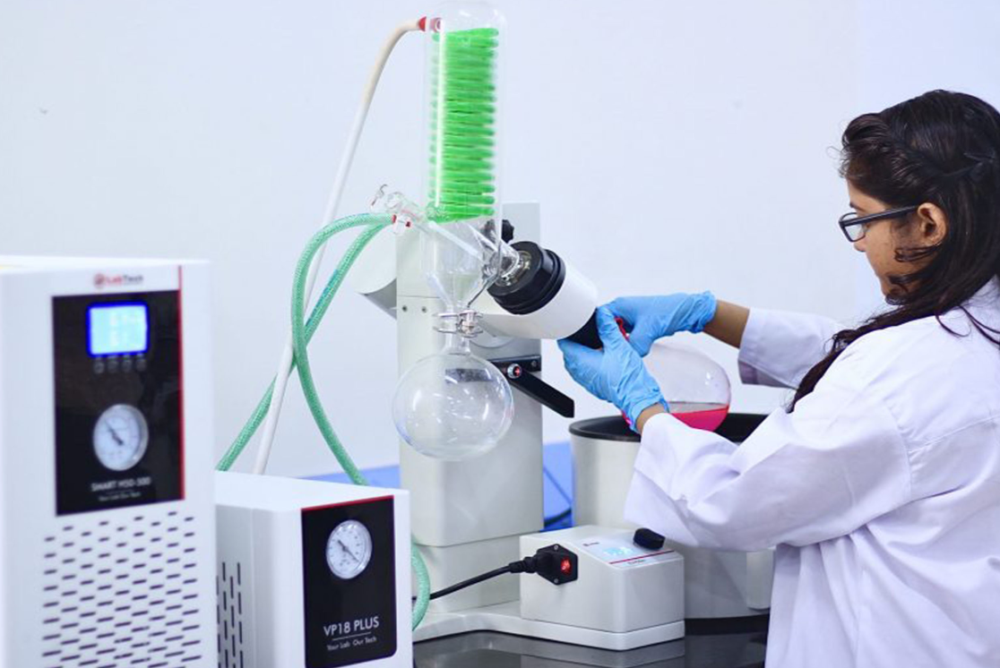
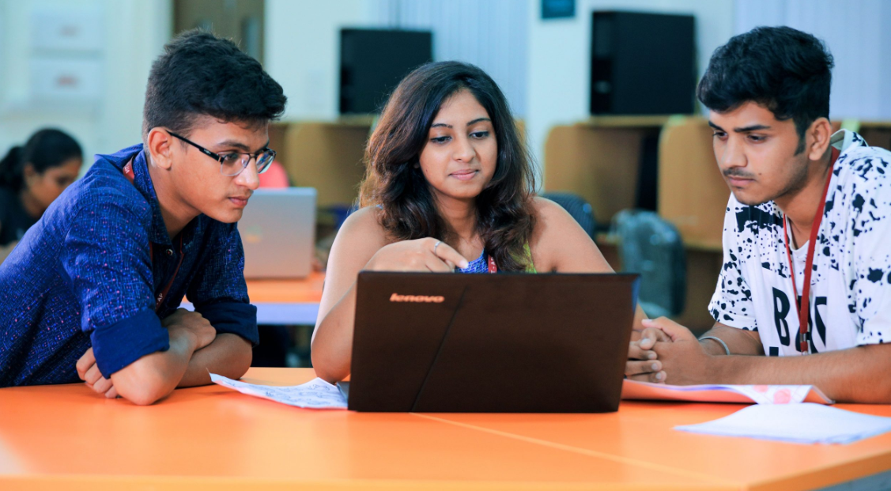

At VIT-AP, all programmes have been carefully designed with focus on curricular and co-curricular activities, industry requirements, and career.The emphasis is on autonomous learning to enable the students chart their own course. This is achieved through a fully flexible credit system in which students select courses, faculty, and timings to befit their interests and aspirations. The pedagogy and design of curriculum for various programmes was carried out with valuable inputs from industry and academic experts. Each programme is managed by experienced and caring faculty members who prepare students for a bright career, higher studies and research. A unique mentoring scheme is in place at our institute, where, a faculty member is assigned to a group of students as a mentor. The mentor not only helps a student in making informed decisions about his academic progress, but also acts as a local guardian. The students at VIT-AP are part of a digitised campus with e-wallet, Wifi, digital library, smart classrooms and much more. At present, VIT-AP offers the following programmes for students.
Hover the courses to view about information
The Ph.D. programme at VIT-AP School of Law (VSL) is designed to prepare the graduates for careers as legal scholars and teachers through a doctoral programme aimed at the production of a substantial body of academic research and writing under the close supervision of expertfaculty members.This programme offers emerging scholars an opportunity to contribute to the development of law as an academic field, and it provides an alternatepathway into law teaching alongside existing routes such as fellowships, advanced degrees in cognate fields and legal practice.
 VIT-AP offers a 5-year integrated Bachelor of Business Administration and Bachelor of Laws (BBA.,LL.B (Hons)) is a dual degree programme inculcating sound principles of business administration and law preparing a student to excel in corporate field nationally and internationally. Meticulously curated pedagogy and innovative techniques not only enable a student to survive in the competitive world but also overcome the challenges with innovative methods trained during the course.
VIT-AP offers a 5-year integrated Bachelor of Business Administration and Bachelor of Laws (BBA.,LL.B (Hons)) is a dual degree programme inculcating sound principles of business administration and law preparing a student to excel in corporate field nationally and internationally. Meticulously curated pedagogy and innovative techniques not only enable a student to survive in the competitive world but also overcome the challenges with innovative methods trained during the course.
VIT-AP offers a 5-year integrated Bachelor of Arts, Bachelor of Laws (BA.LLB (Hons)) Programme which is a combination of law and arts subjects. A sound understanding of subjects like political science, economics etc. with sufficient grounding in the fundamental branches of law gives the student a well-rounded education and prepares them to be the best in their field.
The objective of this programme is to learn the concepts of electronics and communication disciplines and apply them to solve real world problems in the industry. It emphasizes the design of hardware systems as well as communication systems.The students start the programme learning the fundamental concepts of electrical engineering, while doing foundation courses in mathematics and physics in tandem. A student then progresses to study core subjects of electronics such as Analog and Digital Circuit Design, Control Engineering, and communications courses such as Analog and Digital Communications, Signals and Systems etc. The foundations laid by these basic courses enable students to select various electives that provide them with specialized skill sets.
The M.Sc. Physics programme aims to develop an application and technology oriented learning, along with an in-depth training of the core classical areas of Physics. The programme is designed with a combination of theoretical, experimental, and project-based learning components of Physics to enhance the passion for the subject, a deep understanding on various interdisciplinary areas, and a desire to contribute for the development of new technologies. Under this programme, students get an opportunity to get introduced to cutting edge modern day technologies and gain experience via active hands-on learning. The programme is of two years duration and is split into four semesters. Students have the opportunity to get engaged in interim and final semester projects, and work in the many interdisciplinary areas of research active in the University. You may please contact our faculty members for further details regarding the curriculum.
The Computer Science and Engineering programme at VIT-AP is a unique blend of hardware and software, allowing students to gain knowledge about the concepts that enable many of today’s fundamental technologies, including Wireless Communication and the Internet of Things.The initial level courses provide students with a core foundation in programming, mathematical reasoning, physics, and circuit design. The latter part blends fundamentals in computer science including software engineering, database management system, computer networks, operating systems, and computer architecture with fundamentals in electrical engineering including digital logic design and embedded systems. Elective courses allow students to specialize in advanced areas of computer science. In this programme, you will gain hands-on experience in the theory and application of computing, as well as practical experience through Engineering Clinics, Capstone Project, and Internship. Students pursuing computer science courses will acquire knowledge of the design, implementation, and management of information systems of both hardware and software. You will, further, learn to use computing and information technology to help solve existing and potential real-world problems that we face in business, science, and society.
Generate, transform, and advance knowledge in electronics and create competent engineers that will best serve mankind.
Virtusa Collaborated M.Tech(CSE) aims to develop students excel in IT specialized areas such as Full Stack developer, Data Science, Networking etc. As Full Stack Developer it does not limit to only development but also imbibe Test Driven Development / Behavior Driven Development (TDD/BDD) principles to build quality applications, specifically using various Cloud and DevOps tools. The field has a potential for continued growth in the years to come. M.Tech CSE (5 Years Integrated programme – VIRTUSA) students are offered the highest paying jobs that include the positions viz., Software developer, Full stack developer, Database Administrator and many more..
This programme encompasses the areas such as developing accurate and efficient numerical methods for solving physical or biological models, analysis of numerical approximations to differential and integral equations, developing computational tools to better understand data and structure, etc. Many industry experts and popular business publications have attested that Data in the 21st Century is, like Oil in the 18th Century, the most valuable resource in the world. Hence, the smooth functionality of everything from the government to local companies depend on how we understand data, without which the progress would halt. For those who realize the fundamental value of Data and learn to extract and use it, there will be huge rewards in the current data-driven economy. Therefore, for those interested in mathematics, Statistics and computer Science, this programme offers promising career opportunities with high-salaried packages and chance to innovate and reinvent traditional computing technologies. The curriculum for this programme is designed to meet the needs of sophisticated mathematics, computing and data science in modern scientific investigations, technological innovations, business management. The programme has three components: Mathematics and Statistics, computing and Data science, which are perfectly blended so that the strong mathematical and analytical components that are built in the curriculum form the basis on which the technological aspects of Data Science are developed. Consequently, the programme, which is run by a team of committed faculty as instructors, produces a group of students with multiple skills in mathematics, computer science and Data Science. The curriculum for this programme is designed is divided into two parts. The initial part of the programme focuses on acquiring fundamental knowledge of mathematics, statistics, and computer science. It concentrates on areas where mathematics and computing are most relevant to each other, emphasising the bridges between theory and practice. It offers opportunities for potential computer scientists both to develop a deeper understanding of the mathematical foundations of their subject, and to acquire a familiarity with the mathematics of application areas where computers can solve otherwise intractable problems. It also gives mathematicians access to both a practical understanding of the use of computers and a deeper understanding of the limits on the use of computers in their own subject. Further, this part of the programme is designed to provide the students with the skills of those disciplines of mathematics, statistics and computer science that bring together the core knowledge that constitutes data science. The later part blends fundamentals of Computational and Data sciences. In this part of the programme students acquire the knowledge about industry relevant skills on Mathematical modeling, statistical modeling, data science concepts, machine learning principles and algorithms and visualization techniques. The programme will also provide with adequate domain knowledge to help organizations find ways to take major business decisions, reduce costs, get into new markets, launch a new product or service, find the sentiment of the customers and so on. Electives allow students to specialize in advanced fields such as Machine Learning, Deep Learning, Big Data, etc. Our programme is designed to go beyond traditional teaching methodologies from teaching students acquire fundamental knowledge of mathematics, statistics, and computer science to instil the interest to get introduced to cutting-edge state of the art data science technologies and gain hands-on experience via active learning through lab embedded courses and mini-projects, Capstone Project, and Internship.
Many industry experts and popular business publications have attested that Data in the 21st Century is, like Oil in the 18th Century, the most valuable resource in the world. Hence, the smooth functionality of everything from the government to local companies depends on how we understand data, without which the progress would halt. For those who realize the fundamental value of Data and learn to extract and use it, there will be huge rewards in the current data-driven economy. Data science is a multidisciplinary field that involves the use of scientific methods, processes, and algorithms to extract insights from the large and ever-increasing volumes of data collected and created by today’s organizations. Data science drives a significant proportion of global economic activity and is influencing scientific progress across numerous fields. Therefore, this program is specifically designed to meet the needs of the industry in the areas of Data Science. Our 2-year Master of Science (M.Sc.) in Data Science is an advanced degree programme designed to provide specialized training in analytical and computational Statistics that finds its applications everywhere ranging from healthcare, banking, to governance. Our programme is designed to go beyond traditional teaching methodologies from teaching students to acquire fundamental knowledge of mathematics, statistics, and computer science to instill the interest to get introduced to the cutting-edge state of the art data science technologies and gain hands-on experience via active learning through lab embedded courses and mini-projects, Capstone Project, and Internship. The course aims to help students develop statistical programming skills with a career prospect in the corporate. The two years M.Sc. Data Science degree programme in collaboration with QpiAI, India helps students gain strong methodological foundations in analytical statistics, handle statistical consultations and learn the various techniques, skills, and use of tools.
The two-year M.Sc. Chemistry in collaboration with Mitsui Kinzoku Components India (MKCI) offered by VIT-AP University provides students ample opportunities to choose courses from a broad spectrum of cutting-edge areas in addition to fundamentals of organic, inorganic, physical, analytical and computational chemistry. Sessions on improving technical skills, scientific writing, oral presentations and research expertise have been incorporated in the curriculum. Furthermore, the students will have the scope to pursue their masters thesis work at various national and international institutions and industries. Overall, through an approach of integrating the in-depth core and elective courses, and research work, instructed and guided by highly qualified and well experienced faculty members, students will gain the foundation and skill in advancing their career in higher studies as well as in industry.
The programme is designed for students, who would like to serve the nation through various administrative services. It offers a dual degree of B.A. in Public Services and M.A. in Public Services, giving learners an opportunity to decide when they want to take the UPSC exam. Primarily, this programme caters to students who are interested in the field of social sciences. Here, the students have the advantage of choosing their programme-course according to their area of interest. Apart from enabling them to pursue academic research in public services, this course will also train them for competitive public service commission examinations.
To address the growing need of engineering talent with skills in digital technology, TCS, in partnership with leading academicians across India, has designed a 4 years undergraduate programme on Computer Science titled “Computer Science and Business Systems (CSBS). This course curriculum is designed based on the suggestions given by the TCS, which benefits the students in enhancing their employability skills by making them capable of using the latest computer technology in developing a business management system. The objectives of this course are to cultivate students in Understanding of Contemporary Technology, Understanding of Technology Abstraction, Knowledge of Common Business Principles and Innovation Ability, and Strong in Ethics and Life Value. The students are exposed to learn the recent trends such as Computational Statistics, Software Development Models, Design Thinking, Cognitive Science & Analytics, Machine Learning, Financial Management, Services Science & Service Operational Management, Marketing Research, and Marketing Management.
The undergraduate programme in Mechanical Engineering has a strong focus over the design of mechanical systems and hands-on experience. The programme includes in-depth study of thermal, design, manufacturing and automation courses at core curriculum level to design the systems relevant for industries. In addition to the theoretical and laboratory based curriculum, students have to complete engineering clinics courses and a capstone project. The students have to complete a co-op in the industry for one semester. This degree programme provides a strong foundation in mechanical engineering discipline, development of critical thinking and problem solving skills. Besides the technical skills, the academic programmes also sharpen communication, writing and problem solving skills. The department has state of the art facilities in the Thermal Engineering Systems Laboratory, Fluid Lab, Materials Engineering Lab, Manufacturing Process Lab, Workshop, Computational Fluid Dynamics Lab, Strength of Materials Lab, Engines Lab, Robotic Laboratory, Heat Transfer Laboratory.
 The Integrated M.Tech. (Software Engineering) programme is a 5 year integrated course. It is specifically designed to meet the needs of IT industry in the areas of software engineering design and implementation. Our Software Engineering programme goes beyond teaching simple programming, and instead focuses on modern software engineering principles, tools, and analysis techniques for the design of large and complex software systems. The initial level courses provide students with a core foundation in programming, mathematical reasoning, physics and circuit design. The later part blends fundamentals in IT programming including software engineering, database management system, computer networks, operating systems and storage technologies, IoT, and cloud computing. Electives allow students to specialize in advanced fields such as database administration, network administration, big data, team management software, software professional management etc. Students gain hands-on experience in the theory and application of software programming, as well as practical experience through Engineering Clinics, Capstone Project and Internship. They also gain work experience while pursuing the programme through the co-operative education or the industrial applications internship option. Students in their internships; are both full-time students and paid employees of the industrial partner. While working with professional developers at various industries, they are familiarised with fundamentals of the software and computer programming and its applications to solve real problems for customers.
The Integrated M.Tech. (Software Engineering) programme is a 5 year integrated course. It is specifically designed to meet the needs of IT industry in the areas of software engineering design and implementation. Our Software Engineering programme goes beyond teaching simple programming, and instead focuses on modern software engineering principles, tools, and analysis techniques for the design of large and complex software systems. The initial level courses provide students with a core foundation in programming, mathematical reasoning, physics and circuit design. The later part blends fundamentals in IT programming including software engineering, database management system, computer networks, operating systems and storage technologies, IoT, and cloud computing. Electives allow students to specialize in advanced fields such as database administration, network administration, big data, team management software, software professional management etc. Students gain hands-on experience in the theory and application of software programming, as well as practical experience through Engineering Clinics, Capstone Project and Internship. They also gain work experience while pursuing the programme through the co-operative education or the industrial applications internship option. Students in their internships; are both full-time students and paid employees of the industrial partner. While working with professional developers at various industries, they are familiarised with fundamentals of the software and computer programming and its applications to solve real problems for customers.